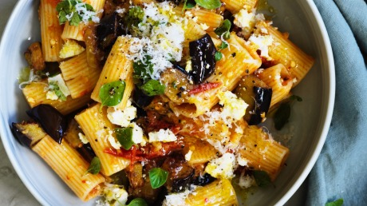

Eggplant Pasta
Easy and quick pasta dish

Ingredients
- 1/4 cup olive oil
- 2 cloves garlic, minced
- 1 eggplant, peeled and cut into 1/2-inch cubes
- 1 (28 ounce) can plum tomatoes with juice, chopped
- 1 (16 ounce) package rigatoni pasta
Directions
Step 1
- Heat olive oil in a large skillet over medium heat;
cook and stir garlic until fragrant, 1 to 2 minutes.
- Add eggplant; cook, stirring constantly,
until eggplant is softened, about 5 minutes.
- Add tomatoes and juice; cook until sauce is slightly
reduced, about 20 minutes.
Step 2
- Bring a large pot of lightly salted water to a boil.
- Cook rigatoni in the boiling water, stirring occasionally until
cooked through but firm to the bite, about 13 minutes.
- Drain and transfer to a serving bowl.
step 3